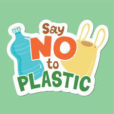
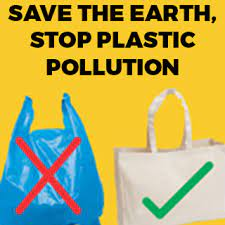

Reduce Plastic Usage
Join us in the fight against plastic straws and bags! We are committed to preserving our planet and protecting the environment for future generations. Plastic straws and bags are just a small part of the problem, but we can make a big difference by eliminating them from our lives. Why do we care about straws and plastic bags? Because they pose a significant threat to our oceans, wildlife and human health. Millions of tons of plastic are discarded annually, often finding their way into our oceans, where they harm marine animals and pollute our beaches. By refusing to use plastic straws and bags, we can reduce our plastic footprint and help protect marine life. Opting for reusable alternatives, such as metal, bamboo or glass straws, and reusable fabric bags, is a simple but powerful way to do your part. Join us in this campaign to create a cleaner, more sustainable future. Make the change today and say no to straws and plastic bags. Together we can make the difference!" Join our campaign and help us spread awareness about the harm caused by plastic straws and bags. The future of our planet is in our hands. Let's act now to protect what is ours.
Spread Awareness
Help spread awareness about the harmful effects of plastic on the environment.Share information about the harm caused by plastic straws and bags on your social media, talk to friends and family about the importance of reducing the use of these disposable items, and participate in community events to promote sustainable practices. By educating others about the devastating impacts of plastic, we can inspire positive change in our communities and encourage more responsible habits. Every person who joins the cause contributes to a global movement towards a cleaner, healthier future for all. Let's work together to build a world where plastic is no longer a threat to our nature and human well-being. Your voice and action are powerful tools for change. Join us on this journey towards a more sustainable planet free from the harmful impact of plastic. The future of our planet depends on each one of us."
Take Action
Take action in your community by organizing events and cleaning campaigns. Mobilize your friends, family and neighbors to come together for a cleaner and healthier environment. Organize clean-up walks at beaches, parks and public areas where plastic litter is commonly found. Join local environmental conservation groups or create your own group dedicated to cleanup and awareness. Additionally, host educational events to raise awareness about the negative impacts of plastic on the environment. Hold talks, workshops and exhibitions to share information about sustainable practices and alternatives to plastic. Educate people about the importance of reducing plastic consumption and encourage them to adopt greener lifestyle habits. By taking concrete action in your community, you not only contribute to protecting the environment, but you also inspire others to follow suit. Together, we can create a global movement of awareness and action to combat plastic pollution and preserve the natural beauty of our planet for future generations."
Support the Cause
Support the cause financially or by volunteering your time.Contribute to organizations and projects that work to reduce the use of plastic bags and straws, either through financial donations or by volunteering your time. Many nonprofit organizations depend on community support to continue their environmental awareness and education initiatives. Additionally, you can get directly involved in local initiatives, such as recycling programs and reforestation projects, which have a positive impact on reducing plastic pollution and protecting the environment. By participating in these activities, you not only help the cause but also become part of the solution. Whether through actions, volunteer work or simply spreading the message, every contribution is beneficial and makes a difference. Together, we can create a more sustainable future free from the harmful impact of plastic. Join our journey and be part of the change we want to see in the world."